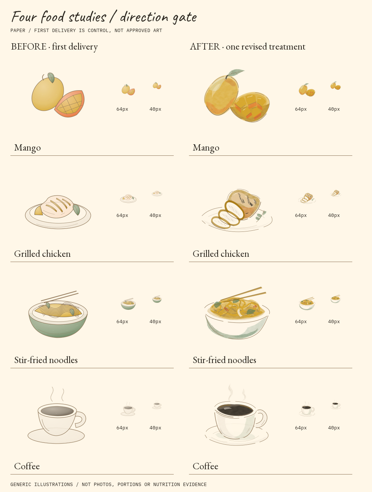
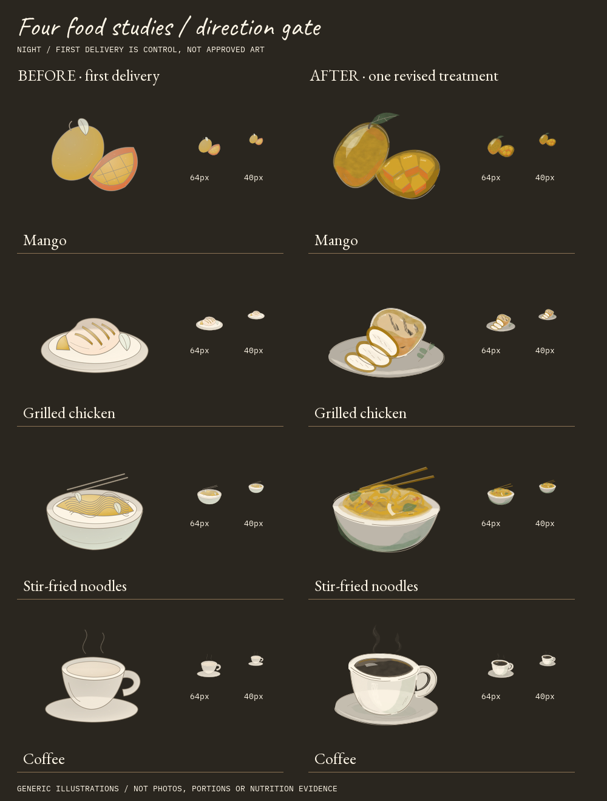

From icons toward ink & wash
Exactly four subjects. First delivery retained as control, not approved artwork. Revised samples await owner review; these are digitally authored studies, not physical watercolor scans.
Paper

Night ink

Generic illustrations—not meal photographs, portion sizes or nutrition evidence. STOP FOR SAMPLE APPROVAL.